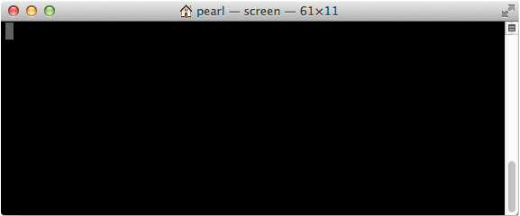
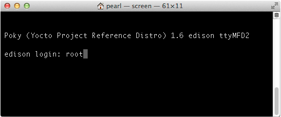

-
Connect to the USB serial device using the Terminal “screen” utility.
screen /dev/xx.usbserial-XXXXXXXX 115200-
Replace “/dev/xx.usbserial-XXXXXXXX” with your device’s unique name.
-
“115200” indicates the baud rate. Always use 115200.
-
-
When you see a blank screen, press the Enter key.
For Intel® Edison boards running older firmware: You may need to press the Enter key twice.

-
Once connected you will see a login prompt.
Type in “root” for the username and press Enter.
